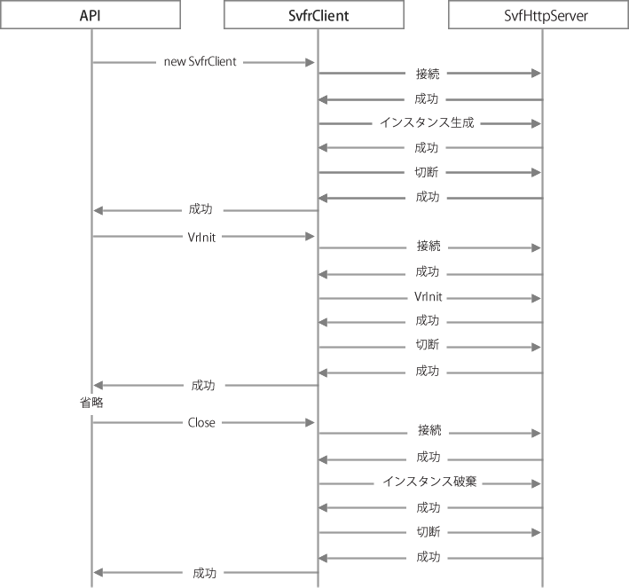
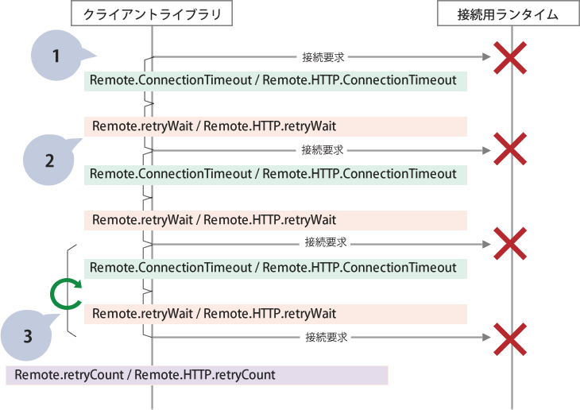
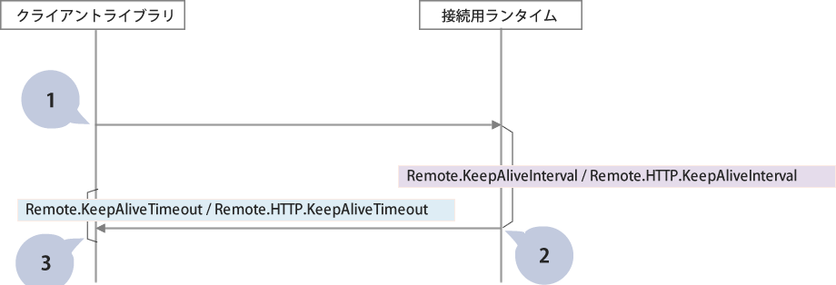
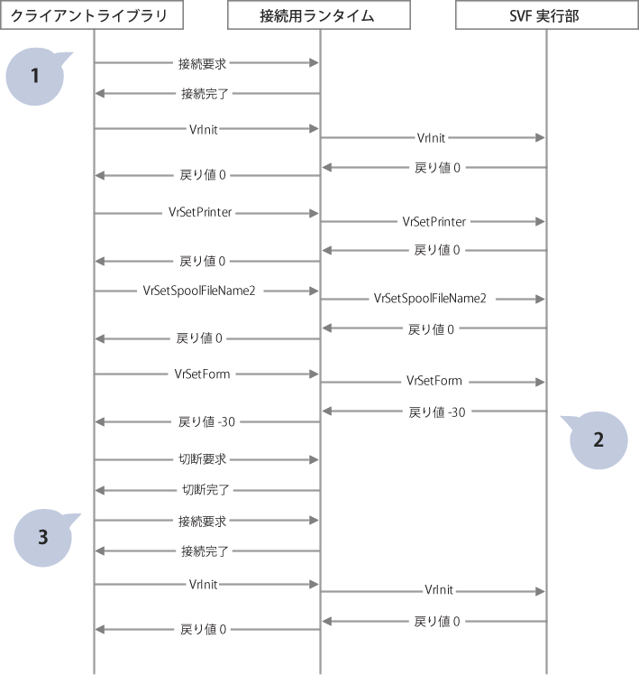
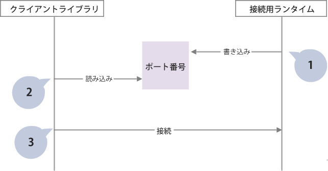

3.1.3. オプションパラメーターの説明
オプションパラメーターの説明
svfrclient.propertiesで設定するオプションパラメーターについて説明します。
HTTP通信における通信手段の指定
HTTP通信では、通信手段を「通常転送」と「一括転送」から選択できます。通信手段の指定には、Connection.HTTP.Methodを使用します。
通常転送
通常転送は、Socketと互換性がありますが、要求のたびに接続を行うためSocketと比較すると通信速度が落ちます。

一括転送
一括転送は、通信の回数を減らして速やかに結果を取得するため、次のような仕組みを用いています。
クライアント: APIのコマンドをファイルに順次書き込みます。
クライアント: VrQuitのタイミングでコマンドファイルを転送します。
サーバー: 受信したファイルを解析し、順次APIを実行します。

注意
データ取得系の関数（VrGetStatus、VrGetAttribute、VrGetManageNumなど）は、一括転送中に使用できません。VrQuit関数よりも後であれば使用できます。
APIの呼び出し時にサーバーからその都度応答を受信しているわけではないため、ログに処理結果をリアルタイムに反映させることができません。
タイムアウト
タイムアウト設定には、次のオプションを使用します。
Remote.ConnectionTimeout（Socket）/Remote.HTTP.ConnectionTimeout（HTTP）
接続開始後に接続完了の状態になるまでの待ち時間です。指定した時間（秒）を経過するとタイムアウトします。
Remote.SendTimeout（Socket）/Remote.HTTP.SendTimeout（HTTP）
接続完了後にAPIが送信可能な状態になるまでの待ち時間です。指定した時間（分）を経過するとタイムアウトします。
Remote.RecvTimeout（Socket）/Remote.HTTP.RecvTimeout（HTTP）
各APIを呼び出し後にその応答が返ってくるまでの待ち時間です。指定した時間（分）を経過するとタイムアウトします。
Remote.CloseTimeout（Socket）
切断要求後に切断完了の状態になるまでの待ち時間です。指定した時間（秒）を経過するとタイムアウトします。

注意
「Remote.ConnectionTimeout」はアプリケーションサーバーOSの「TCPタイムアウト」に依存するため、設定値の上限は「TCPタイムアウト」時間になります。
「TCPタイムアウト」の値についてはOSの設定を確認してください。
エラーハンドリング
エラーハンドリングには、次のオプションを使用します。
Socket
Remote.CheckConnectionBusy、Remote.retryWait、Remote.retryCount、Remote.ConnectionTimeout
HTTP
Remote.HTTP.retryWait、Remote.HTTP.retryCount、Remote.HTTP.ConnectionTimeout
接続用ランタイムとの接続に失敗した場合
接続先サーバーとして指定したIPアドレスやホスト名が実在しない場合は、リトライせずに即時エラーとなります。発生までの時間はOSに依存します。また、通信状況などによっても異なります。
接続用ランタイムが起動していない場合、Remote.retryWait（Socket）/Remote.HTTP.retryWait（HTTP）で指定したインターバル（ミリ秒）を置いて接続要求を繰り返します。
接続用ランタイムが起動していない場合、Remote.retryCount（Socket）/Remote.HTTP.retryCount（HTTP）で指定した回数だけリトライします。

接続は成功するが、通信回線がビジー状態である場合
Remote.CheckConnectionBusy（Socket）の設定が「true」の場合は、接続完了後にテスト送信を行い、正常に通信できるかどうか確認します。HTTPにこの設定はなく、常に有効です。
テスト送信の応答がRemote.retryWait（Socket）/Remote.HTTP.retryWait（HTTP）の時間内に返ってこない場合は、同様の動作をRemote.retryCount（Socket）/Remote.HTTP.retryCount（HTTP）で設定した回数リトライします。
リトライしても応答が返ってこない場合は、通信回線がビジー状態であると判断して「Server Connection Busy.」の例外を発行します。

キープアライブ
キープアライブ設定には、次のオプションを使用します。
Socket
Remote.KeepAliveInterval、Remote.KeepAliveTimeout
HTTP
Remote.HTTP.KeepAliveInterval、Remote.HTTP.KeepAliveTimeout
オプションパラメーターの説明
クライアントライブラリ起動時に、SvfrServerにRemote.KeepAliveInterval（Socket）/Remote.HTTP.KeepAliveInterval（HTTP）で設定した値を送信します。
SvfrServerがキープアライブ機能に対応していれば、Remote.KeepAliveInterval（Socket）/Remote.HTTP.KeepAliveInterval（HTTP）で設定した間隔でキープアライブパケットを送信します。
クライアントライブラリは、Remote.KeepAliveTimeout（Socket）/Remote.HTTP.KeepAliveTimeout（HTTP）で設定したタイムアウト値になる前に、キープアライブパケットを受信しているかどうか確認します。

参考
この機能を使用するには、サーバー側のSVF実行部製品接続用ランタイムもキープアライブに対応している必要があります。
エラーリカバリ
エラーリカバリの設定には、次のオプションを使用します。
Socket
ErrorRecovery.TargetErrorMode、ErrorRecovery.TargetErrorList、ErrorRecovery.RetryCount
HTTP
ErrorRecovery.HTTP.TargetErrorMode、ErrorRecovery.HTTP.TargetErrorList、ErrorRecovery.HTTP.RetryCount
オプションパラメーターの説明
プロパティを変更し、エラーリカバリを行う対象となるエラーコードを設定します。
例 1. 設定例（Socket）ErrorRecovery.TargetErrorMode=1ErrorRecovery.TargetErrorList=-30ErrorRecovery.RetryCount=3
設定したエラーが発生した場合（ここでは、VrSetFormでエラーコード「-30」が発生）、エラーが発生したAPIだけでなく、接続の段階からすべての処理をリトライします。
リトライは、設定した回数行います。

ポート番号自動割り付け、オンデマンド起動
ポート番号自動割り付けや、オンデマンド起動の設定には、次のパラメーターを使用します（Socketのみ）。
LocalServer.FileName、LocalServer.Arguments、LocalServer.StartTimeout
オプションパラメーターの説明
.NET版の接続用ランタイムは起動する際に使用しているポート番号を共有メモリに書き込みます。このポート番号を利用して以下のような機能を利用することができます。
ポート番号自動割り付け
接続用ランタイムは、起動オプションの「-P」に「0」を設定し、ランダムのポート番号で起動します。このとき、接続用ランタイムはポート番号を共有メモリに書き込みます。
クライアントは起動時に共有メモリからポート番号の読み込みを試みます。読み込みが成功すれば、すでに接続用ランタイムが取得したポート番号で起動していると判断し、読み込みが失敗すれば、まだ接続用ランタイムが起動していないと判断します。
読み込みが成功した場合、クライアントは読み込んだポート番号で接続用ランタイムに接続します。

オンデマンド起動
クライアントは起動時に共有メモリからポート番号の読み込みを試みます。読み込みが成功すれば、すでに接続用ランタイムが取得したポート番号で起動していると判断し、読み込みが失敗すれば、まだ接続用ランタイムが起動していないと判断します。
読み込みが失敗した場合、クライアントはLocalServer.FileNameにある接続用ランタイムを、LocalServer.Argumentsの引数で起動します。

参考
これらの機能は、接続用ランタイムが.NET版であり、クライアントライブラリと接続用ランタイムが同一筐体に配置されている場合にのみ有効です。
SVF実行部製品側の接続用ランタイム起動時に-Pオプションでリスンポートを変更している場合（「SVF実行サーバー側の設定」を参照）のアプリケーション側でのポート指定方法について
C#の場合（host-nameはString型、port-numberはInteger型）
SvfrClient svf = new SvfrClient("host-name", port-number);VB.NETの場合（host-nameはString型、port-numberはInteger型）
Dim svf As SvfrClient svf = new SvfrClient("host-name", port-number);